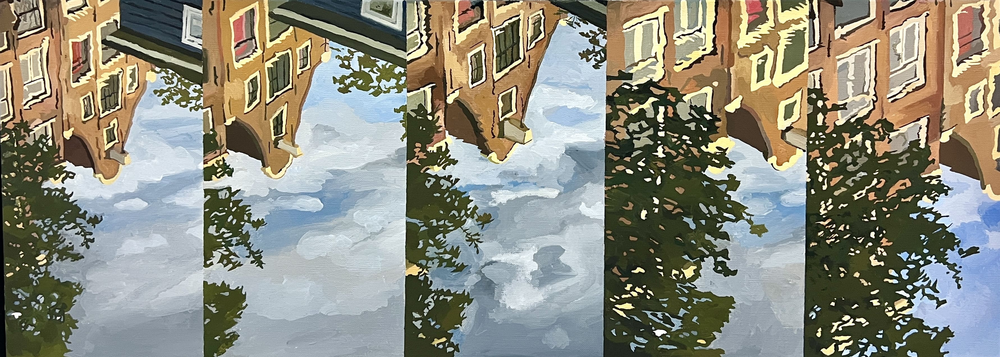
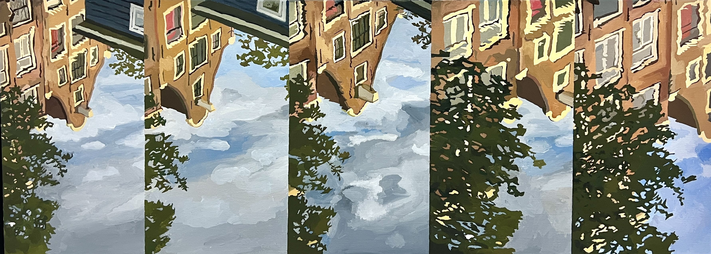

情報化社会の現代においてスマートフォンは私たちの生活に必要不可欠なアイテムとなっている。インターネットなどの通信インフラの整備やデジタル技術の発達のおかげで、私たちは世界中の出来事をリアルタイムで知れるようになったのはいいものの、望ましくない形で私たちの生活に影を落としているのも事実だ。旅先で美しい景色を目の前にしても、その景色を十分楽しむ暇もなくスマホで写真や動画を撮り、すぐさまSNSにアップする。そうしてクラウドに保存される映像は際限なく増え、莫大なデータの中では情報の価値は相対的に減少していく。記録は即時的なものとして消費され、次第に埋もれていく。
撮影にフィルムが必要だった時代は、記録する対象を吟味してから撮っていたのかもしれない。 祖父が亡くなった日、彼が遺した8mm フィルムを見た。彼は特別な思いで母の姿を撮影したにちがいない。50 年前の祖父と母の日常はとても美しく、愛おしい映像だった。 しかし、科学技術の発展の陰では必然的に古いメディアの需要は減っていき、祖父が遺した8mm フィルムもやがて再生不可能になる。 私の知らなかった大切な記憶を記録するために、絵画としてその映像をキャンバスに描く。私の知らなかった記憶の足跡を辿ってゆく。１つのキャンバスに映像の元となる連続写真を描き、再び映像にする試み『Footage Paintings』 はこうして始まった。
『Footage Paintings』の成立には美術史からのいくつかの引用がある。まずはエドワード・マイブリッジ(Eadweard Muybridge 1830 年 -1904 年)の発明を引用し、元となる映像を連続写真として分割したものを時系列が流れるようにキャンバスへ描きこむ。 次に、ゲルハルト・リヒター (Gerhard Richter 1932 年 -) は『Photo Paintings』シリーズにて弁証法的入れ子構造に写真と絵画という2つの要素を閉じ込めた。この写真と絵画の間に存在する揺らぎは『Footage Paintings』における映像と絵画の間にも存在する。写真では一瞬の景色を切り取ることしかできないが、映像ではその一瞬一瞬を連続的に切り取ることができる。リヒターを引用した上で映像を用いることにより、『Footage Paintings』は実際に過去に流れていた時間の揺らぎへと鑑賞者の意識を向けさせる。
祖父が遺した8mmフィルムの映像をもとにした絵画ならびにアニメーションの作品。画像や動画の加工技術が進歩した現代では情報の真偽を確かめる必要があるが、50年前の祖父の前で無邪気に笑う母の姿は紛れもなく本物で、そこには情報としての確かな手触りがあった。私の知らなかったこと。私がこの世に本当に残したいもの。私は彼らの記憶の足跡を辿り、絵画として記録した。


スマートフォンで撮影した波の動画をもとに描いた、絵画ならびにアニメーションの作品。Footage Paintings における主題「個人を取り巻く情報化社会」を念頭に置き、本作では、TikTokやYouTube Shortsなどの縦動画に着目し、波のように現れては一瞬で消えてゆくショート動画のアンチテーゼとして、縦構図の映像になるように制作した。現代人を飲み込む情報の波と、海や川に遍在する現実的な波。クラウドに残り続けるデジタルな波を現実的な波に置き換え、それを絵画というアナログな手法で記録した。


 

世界各地の友人たちとビデオ通話をした際の映像をもとに制作したキャンバス作品。時差は捨て置き、各都市を流れる運河の水面に現れる差異に友人と同時にアクセスできた結果を絵画として記録した。また、世界中に無数に設置されたライブカメラの定点映像をもとに、日本時間2024年1月9日午前0時半ごろの世界各地の都市の様子を描いた。長崎、ニューヨーク、ウクライナ、ハワイ、渋谷、ガザ。リアルタイムに接続された私たちの本物の日常を、同時に体験した異なる景色という共通項を以て記録した。


松村優里香
1996年生まれ 長崎県在住
絵画であり映像である作品。
静的な絵画の表面に時間性をもたらす為に、元となる映像を写真として分割し、その連続写真をキャンバスに描きこむ。
そして描かれたコマを全て繋げ合わせることで一つのアニメーションが生まれる。
映像が映し出す世界をそのままキャンバスに落とし込む。
普段は交わることのない絵画と動画。
これらの垣根を越える試み、これを私は「Footage Paintings」と呼び、作品作りに挑戦している。
お問い合わせは yurikamatsumura.p@gmail.com まで。